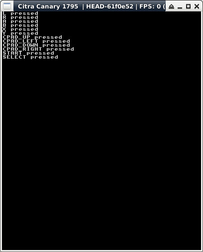

參考資訊：
https://hub.docker.com/r/greatwizard/devkitarm-3ds
main.c
#include <3ds.h>
#include <stdio.h>
int main(void)
{
u32 pre_k = 0;
u32 cur_k = 0;
char *name[] = {
"A",
"B",
"SELECT",
"START",
"RIGHT",
"LEFT",
"UP",
"DOWN",
"R",
"L",
"X",
"Y",
"",
"",
"ZL",
"ZR",
"",
"",
"",
"",
"TOUCH",
"",
"",
"",
"CSTICK_RIGHT",
"CSTICK_LEFT",
"CSTICK_UP",
"CSTICK_DOWN",
"CPAD_RIGHT",
"CPAD_LEFT",
"CPAD_UP",
"CPAD_DOWN"
};
gfxInitDefault();
consoleInit(GFX_TOP, NULL);
while (aptMainLoop()) {
hidScanInput();
cur_k = hidKeysDown();
if (cur_k != pre_k) {
pre_k = cur_k;
for (int c = 0; c < 32; c++) {
if (cur_k & (1 << c)) {
printf("%s pressed\n", name[c]);
}
}
gfxFlushBuffers();
gfxSwapBuffers();
}
gspWaitForVBlank();
}
gfxExit();
return 0;
}
完成
